Confirming Appointment Requests
Link Appointment to a Patient
- Double-click on a line in the Patient Appointment Requests list.
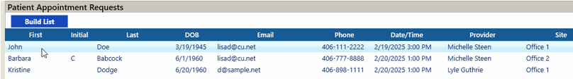
- The Link Appointment screen will popup
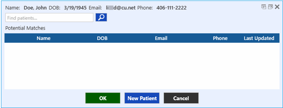
- The information the patient entered online will be at the top of the screen. TIMS will compare this information (First name, Last name, DOB, email, phone number) with existing patients in the database and either find an exact match, suggest possible matches, or find no match.
- New Patient: In the example above TIMS finds no patients in the database that match the last name, DOB and 1 other piece of information, so no possible matches are listed. It will be assumed that this is a brand new patient. Click the New Patient button. The Patient details screen will popup. It will be pre-filled with the Name, DOB, Phone number, and Email that the patient entered online. The Site and Seen By will also default to what was selected for their appointment request.
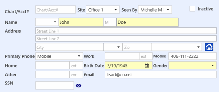
Enter any other information known, and click OK to save the new patient.
- Existing Patient (exact match): In the example below TIMS has found an exact match in the database. That means that the Last Name, First Name, DOB, email and phone number matched what was entered. It does not look at the Initial in this case. The Link Appointment screen will not pop up, because a patient match has already been made. The appointment is automatically linked with the patient found.
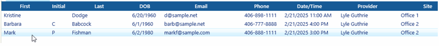
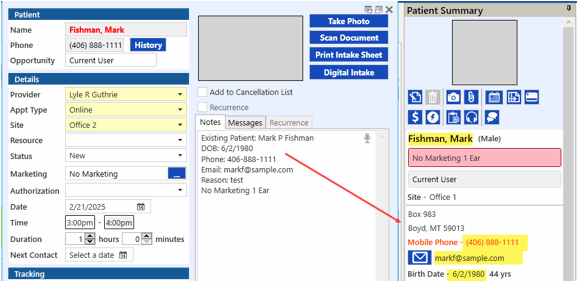
- Existing Patient (partial match): In the example below, not all of the information entered matches exactly to a patient in the database but enough (Last Name, DOB) has matched so that potential choices are presented.
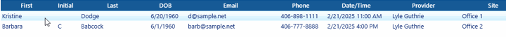
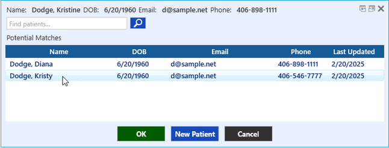
If one of the suggestions listed is the patient you are looking for, select that line. If you think there may be a different match, you can also Search the database by First or Last name to find additional possible matches. Enter a name in the search box, then click the search icon  .
.
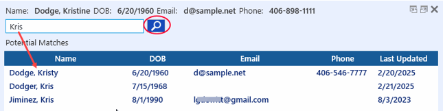
Select the name that is the best match, and click the green OK button. A message will popup asking if you wish to link the appointment request to the selected patient. Click Yes to confirm, No to cancel.
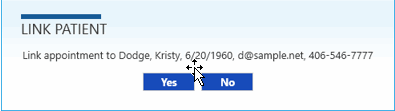
If none of the suggested matches looks correct and you wish to create a new patient record to link with, click the New Patient button and proceed as in step 3-a above.
 Important - after linking the appointment to an existing patient, review the information entered on the request to see if anything on the patient record needs to be updated. For example, the patient may have a different phone number or email address now. Contact the patient to confirm which information should be used going forward, and update their record accordingly.
Important - after linking the appointment to an existing patient, review the information entered on the request to see if anything on the patient record needs to be updated. For example, the patient may have a different phone number or email address now. Contact the patient to confirm which information should be used going forward, and update their record accordingly.
Edit the Appointment
- Once a patient has been linked to the appointment request (either new or existing), the Appointment Details screen for the appointment request will popup with the patient now linked to it.
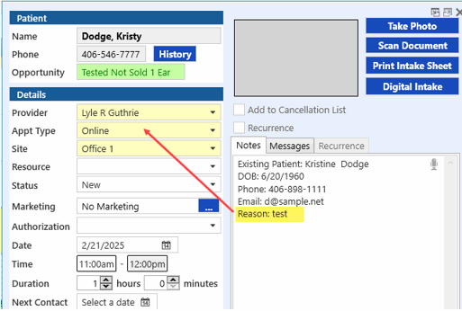
- Change the Appointment Type from "Online" to the appropriate one, based on the "Reason" entered by the patient. (visible in Notes). The Duration will change to the default amount for the type selected. Change any other information needed on the appointment (Resource, Marketing, etc.) If the appointment needs to be changed to a different Date/Time, Provider or Site, you can change it here if you already know where it will be moved to. Otherwise, click OK to save and see it on the grid.
- After changing the Appointment Type to anything other than "Online", the request will drop off the Patient Appointment Requests list.
- Now that the appointment is visible on the grid with the appropriate patient and appointment type, you can see if it needs to be adjusted further. In this example, changing the appointment type resulted in the duration increasing, which in turn created a conflict with another pre-existing appointment. The appointment will need to be rescheduled to a different time slot, day, provider, or site.
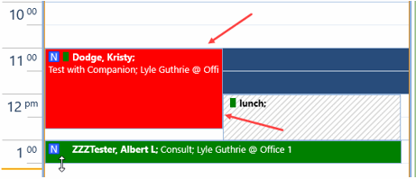
- Contact the patient to find a new time slot, and move the appointment accordingly.
Confirm the Appointment
- Whether the details (time, day, etc) of the appointment have changed or not - it will still need to be confirmed with the patient via whatever method the practice currently uses.
- If using TIMS Notification service, you can send an individual confirmation or verification by clicking on the button in the Appointment Summary panel.
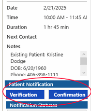
- Otherwise contact the patient by phone, email, or text to confirm.
Opportunity Status
When an appointment request comes in, by default it will be assigned to the patient "Online Request" and have an automatic Opportunity Tracking Status of "2 Ears Aidable". If a new patient is created and the request linked to it, the new patient and appointment will also be assigned as "2 Ears Aidable". If the request is linked to an existing patient, then the appointment will be assigned to the current Opportunity Status of the patient. See Opportunity Tracking for more information.